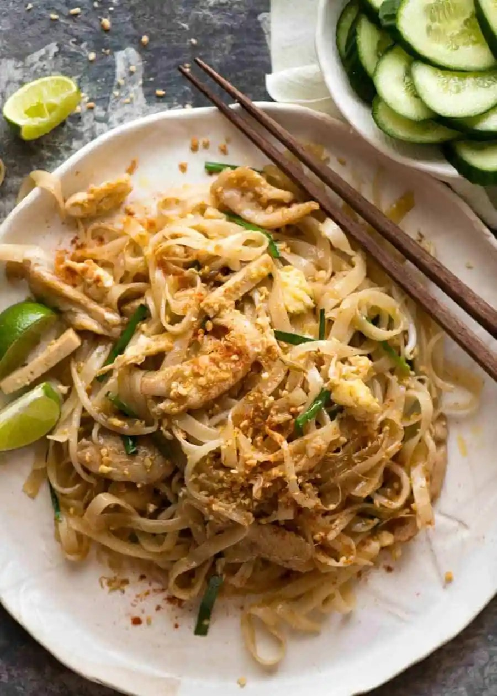

Pad Thai

Description
This is a Pad Thai recipe that truly stacks up to great Thai restaurants yet is totally doable for every home cook with just a trip to your every day grocery store.
With the slippery noodles, signature sweet-savoury flavour, sprinkle of peanuts and tang from lime, this is a Thai food favourite for good reason!
Ingredients
125 g Chang’s Pad Thai dried rice sticks
1 1/2 tbsp tamarind puree
3 tbsp brown sugar
2 tbsp fish sauce
1 1/2 tbsp oyster sauce
2 – 3 tbsp vegetable or canola oil
1/2 onion
2 garlic cloves
150 g/5oz chicken breast (or thigh)
2 eggs
1 1/2 cups of beansprouts
1/2 cup firm tofu, cut into 3cm / 1 1/4″ batons
1/4 cup garlic chives , cut into 3cm / 1 1/4″ pieces
1/4 cup finely chopped peanuts
Steps
- Place noodles in a large bowl, pour over plenty of boiling water. Soak for 5 minutes, then drain in a colander and quickly rinse under cold water.
Don’t leave them sitting around for more than 5 – 10 minutes.
- Mix Sauce in small bowl.
- Heat 2 tbsp oil in a large non stick pan (or well seasoned skillet) over high heat. Add garlic and onion, cook for 30 seconds.
- Add chicken and cook for 1 1/2 minutes until mostly cooked through.
- Push to one side of the pan, pour egg in on the other side. Scramble using the wooden spoon (add touch of extra oil if pan is too dry), then mix into chicken.
- Add bean sprouts, tofu, noodles then Sauce
- Toss gently for about 1 1/2 minutes until Sauce is absorbed by the noodles
- Add garlic chives and half the peanuts. Toss through quickly then remove from heat
- Serve immediately, sprinkled with remaining peanuts and lime wedges on the side, with a sprinkle of chilli and a handful of extra beansprouts on the side if desired (this is the Thai way!). Squeeze over lime juice to taste before eating.